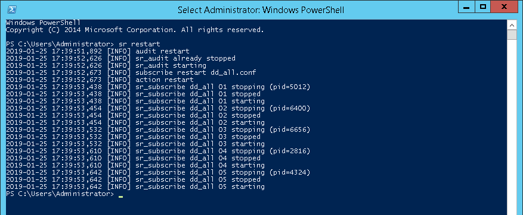
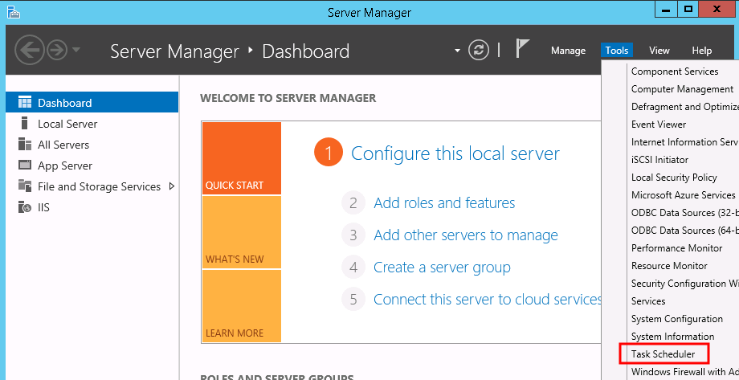
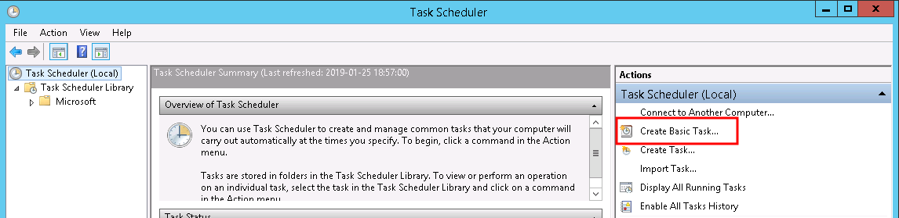
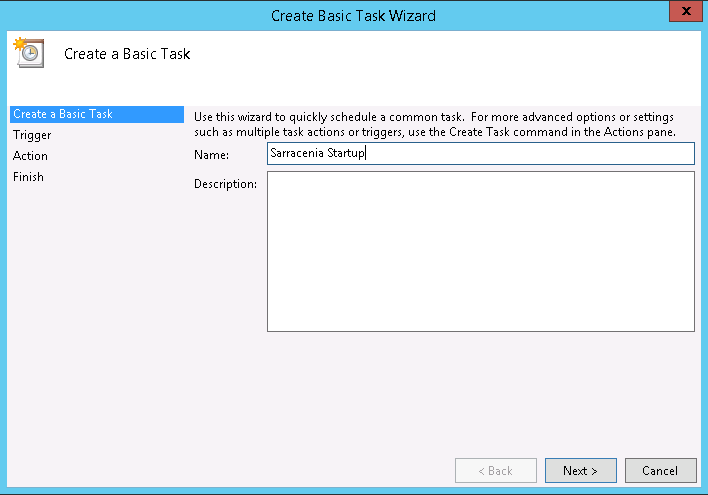
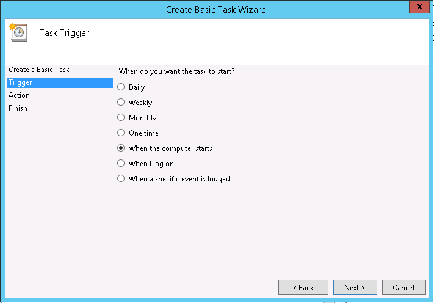
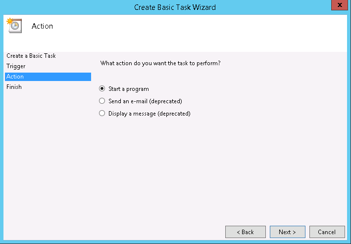
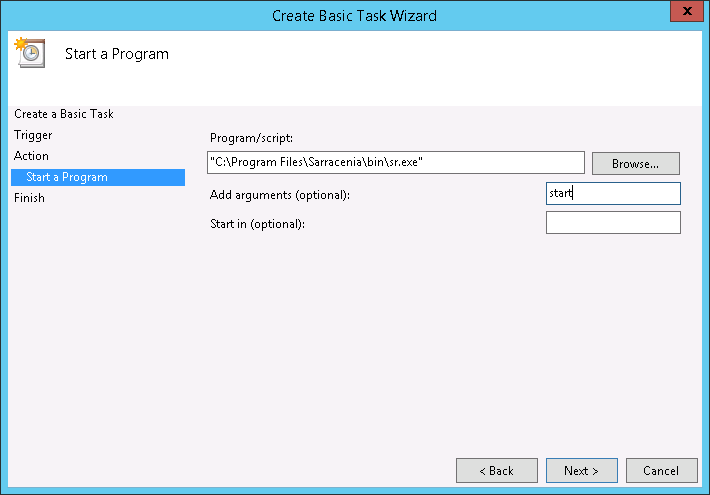
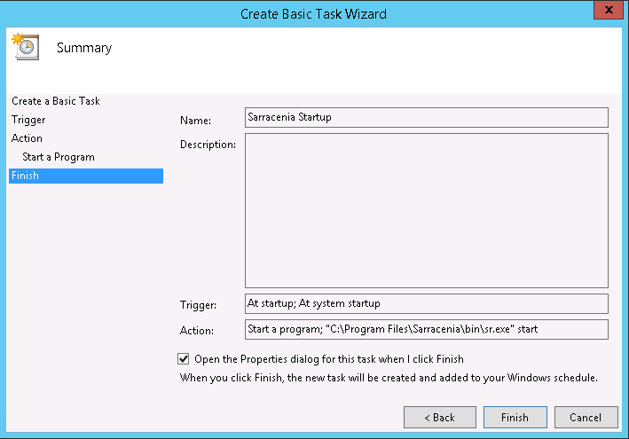
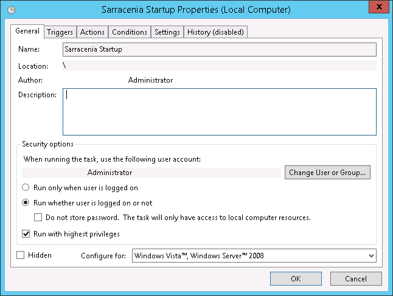
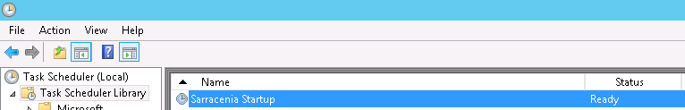

Windows user manual¶
This document teaches novice user with Python on Windows how they could easily run Sarracenia in various way. The screenshots were taken from Windows Server 2012 R2 Standard edition. Feel free to create issues if you believe that this document could be enhanced with one (or more) important case(s).
Contents
Running Sarracenia with a Command Prompt¶
From a Windows Powershell session:¶
Launch a Powershell session and type this command at the prompt:
sr restart
This will start Sarracenia processes as instructed by your configurations and show logging information
Keep this Powershell session alive until you are done with Sarracenia. To stop Sarracenia you may type:
sr stop
This will stop all Sarracenia processes cleanly as would do a restart. Closing this window will also kill all processes.
From Anaconda Prompt:¶
Run this command:
activate sarracenia && sr restart
Running Sarracenia without a Command Prompt¶
Here is a case where someone (like a sysadmin) needs to run Sarracenia without a Command Prompt and ensure that the system starts at Windows startup. The obvious way of doing it would be from the Task Scheduler.
From the Task Scheduler:¶
Open Server Manager > Tools > Task scheduler:
Select Create Basic Task from the action panel:
This will launch the Create Basic Task Wizard where you …
Fill the name:
Choose the trigger:
Choose the action:
Define the action:
Review the task and choose Finish:

Open the Properties dialog and choose Run whether user is logged on or not and Run with highest privileges:
The task should now appear in your Task Scheduler Library with the status Ready.
Then, you may run it immediately with the button.